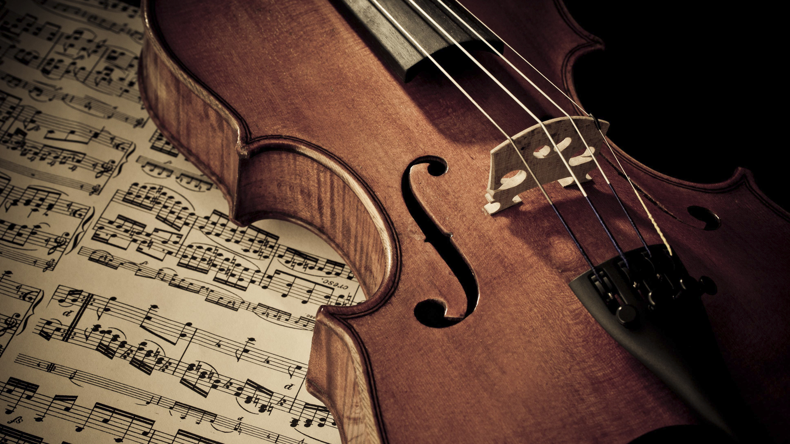
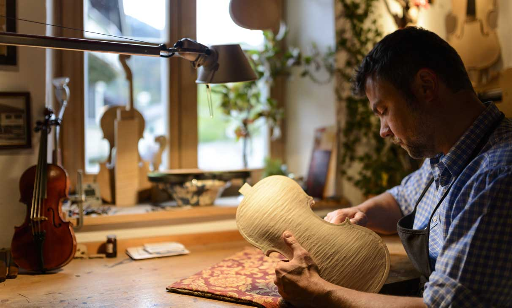

La viola è uno strumento musicale cordofono della famiglia del violino, nella quale occupa il posto del contralto-tenore. Questo strumento è una via di mezzo, come campo di frequenze e timbri musicali, tra il violino e il violoncello. Il termine è stato spesso usato per riferirsi a vari strumenti: la viola nel senso moderno del termine nasce assieme alla famiglia del violino, giungendo a maturazione non più tardi del 1535. È più grande del violino di circa il 15-20% e non ha una taglia standard come quest’ultimo.
Alla luce delle fonti letterarie, non particolarmente abbondanti e chiare per quanto riguarda l'inizio del XVI secolo, è ritenuta maggiormente credibile la possibilità che la genesi degli strumenti della famiglia del violino sia stata unitaria, e che dunque la viola sia nata insieme al violino e al violoncello.
I primi strumenti con caratteristiche tipiche della famiglia sarebbero stati ideati intorno al 1500 o poco prima e l'evoluzione verso le forme e dimensioni moderne sarebbe giunta a una buona maturazione già intorno al 1535, probabilmente nel Nord Italia. Si suppone che il modello di violino/viola non sia invenzione originale di qualche liutaio in particolare, ma sia il risultato di un processo di affinazione dovuto al contributo di numerosi artigiani.Lo strumento si è affermato con un ruolo importante nella musica rinascimentale e fino al Seicento non era da meno al violino nella musica d'insieme. Nella musica del Cinquecento e del Seicento la viola aveva due o tre parti nell'insieme, e veniva costruita in due diverse taglie, accordate però alla stessa maniera, quelle di contralto e di tenore. Nel Seicento vi è stata una notevole produzione di viole, che è scemata alla fine del secolo, quando la viola ha gradualmente perso importanza nella musica d'insieme rispetto al violino o al violoncello. Dalla fine del XVII secolo la viola è scaduta in una posizione più umile rispetto agli altri strumenti ad arco; dalla fine del Settecento ha cominciato a riprendere importanza nella scrittura cameristica e nel corso dell'Ottocento si è gradualmente riavvicinata al livello degli altri archi nella scrittura orchestrale. Dagli inizi del Novecento, ha riconquistato una nuova dignità solistica.

Le misure e proporzioni ideali del violino, strumento chiave della famiglia, sono state trovate empiricamente dai primi grandi liutai; non è stato possibile fare altrettanto per la viola che, per sostenere adeguatamente il registro sul quale è accordata (una quinta più in basso del violino), avrebbe bisogno di una cassa più grande di circa il 50% rispetto a quest'ultimo (ovvero lunga circa 53 cm), risultando impossibile da suonare in spalla alla maniera del violino. Questo problema di acustica ha causato l'assenza di definizione di una dimensione standard per la viola e la continua ricerca di un compromesso tra sonorità e praticità d'uso. Poiché gli strumenti di grandi dimensioni, ovvero oltre i 42-43 cm, sono scomodi da suonare e quelli piccoli non hanno sufficiente profondità di suoni nel registro grave, nell’antichità le viole venivano realizzate principalmente in due diverse taglie, contralto e tenore, che coprivano differenti registri nell'insieme degli archi. Il contralto era accordato sulle stesse note della viola moderna; l’accordatura della viola a tenore era, dal punto di vista sonoro, fondamentale nel Seicento in quanto la tecnologia costruttiva delle corde prevedeva solo l'impiego di budello, spesso non rivestito, con il quale non si riuscivano a realizzare bassi soddisfacenti su strumenti piccoli poiché il calibro delle corde sarebbe stato troppo alto, rendendole rigide e quindi poco sonore e povere di armonici. Per tale motivo, era necessario costruire strumenti con una maggiore lunghezza della corda vibrante, per ottenere bassi più sonori rispetto alle viole contralto ma su strumenti più agili rispetto al basso di violino. Dalla fine del Seicento la taglia di tenore è stata abbandonata, grazie anche agli sviluppi della tecnologia cordaia che hanno migliorato la qualità dei bassi su strumenti più piccoli ed essendo troppo scomoda per suonare le parti tecnicamente più elaborate che venivano scritte per la viola all'epoca.
Nel corso della storia seguente, sono state costruite viole di varia misura: la cassa armonica dello strumento ha lunghezza che varia, salvo rare eccezioni, tra i 38 ed i 46 cm, le misure più comuni sono tra i 41 e i 43 cm. Gli strumenti da studio per i bambini partono solitamente dai 30 cm (dimensioni di un violino da 1⁄2), ma se si ha necessità di strumenti ancora più piccoli si usa in genere un violino di frazione ridotta accordato come una viola. Le viole di piccole dimensioni (da 38 a 40 cm) hanno una voce nasale ma più brillante, che ne esalta il registro acuto; quelle grandi (da 40 a 44) un timbro caldo e rotondo, che ne enfatizza il registro grave.
Nel febbraio del 1959 l'Associazione nazionale Liuteria Artistica Italiana ha eseguito un sondaggio, chiedendo a musicisti, professori, liutai e compositori quali fossero le dimensioni di viola preferite. Il questionario ha ottenuto 200 risposte: 186 di esse erano favorevoli a una dimensione minima di 42 cm (tra cui tutti i compositori e tutti i direttori), di cui 13 prediligevano strumenti di almeno 42,5 cm, 4 di almeno 43 cm, 2 tra i 44 e i 46 cm e un professore di viola preferiva la misura di 48 cm.
La viola monta 4 corde accordate per quinte che si numerano come nel violino dalla più acuta alla più grave sono accordate come segue:
Le corde possono essere di diverso tipo. Anticamente erano realizzate in budello animale, ricavato tipicamente dall'intestino di agnello.
Verso la metà del XVII secolo viene introdotta, probabilmente nel bolognese, la tecnica di filatura o fasciatura delle corde in budello con un filo metallico (tipicamente argento), che permette di aumentarne la densità lineare (e quindi abbassarne l'intonazione) mantenendo un calibro contenuto e quindi avendo corde meno rigide e più responsive.
Alla fine del XIX secolo sono state introdotte gradualmente, per tutti gli strumenti ad arco, le corde in acciaio armonico, ovvero acciaio al silicio particolarmente duro perché ad alto tenore di carbonio, la cui diffusione è stata però abbastanza limitata fino alla prima guerra mondiale, durante la quale vi era difficoltà nel reperire materiale di qualità per la fabbricazione di corde in budello. Negli anni settanta del XX secolo sono state introdotte le corde in materiale sintetico, che hanno un suono più morbido rispetto all'acciaio e una buona tenuta dell'accordatura, offrendo un compromesso pratico fra la sonorità del budello e la praticità dell'acciaio.
Al giorno d'oggi si usano mute di corde per viola di tutte le precedenti tipologie, talvolta anche miste.
L'arco da viola è tecnicamente analogo, nella meccanica della curvatura, a quello da violino, dal quale differisce principalmente per il maggiore peso. La lunghezza della bacchetta è analoga, il fascio di crini è solitamente più consistente e tipicamente il nasetto, la punta, ha lo spigolo posteriore maggiormente arrotondato rispetto all'arco da violino (che ha invece uno spigolo vivo) ma meno rispetto a quello da violoncello.
Mentre la viola aveva maturato la sua forma pressoché definitiva già nei primi decenni del Seicento e nei secoli successivi, come gli altri strumenti della famiglia del violino, lo stesso non può invece dirsi per l'arco.
Nel XVI secolo infatti l'arco era considerato meno importante dello strumento e spesso era realizzato, come le custodie, dagli stessi costruttori degli strumenti. Essendo la tecnica d'arco legata indissolubilmente alle capacità espressive dello strumento, l'arco si è evoluto continuamente e notevolmente, adattandosi continuamente alle esigenze stilistiche delle varie epoche.
Nel Medioevo e Rinascimento si usavano prevalentemente legni autoctoni per le bacchette, invece, nel XVII secolo si affermarono legni esotici che avevano caratteristiche meccaniche superiori alla controparte europea, come il pernambuco. Nel pernambuco, noto anche come legno brasile, è stato trovato il miglior compromesso tra densità ed elasticità e si è affermato come legno di eccellenza per la costruzione degli archi. I protagonisti dell'evoluzione tecnica dell'arco dai modelli barocchi a quelli transizionali e moderni sono stati gli artigiani francesi, principalmente attivi a Mirecourt e a Parigi, le cui innovazioni sono state poi riprese dalle altre scuole europee. Uno dei principali artefici della transizione è stato François Xavier Tourte (1750-1835), che viene spesso etichettato come l'inventore dell'arco "moderno".
Per gli archi da viola, in generale la domanda è stata abbastanza contenuta nel corso del XIX secolo, per via della scarsa specializzazione dei violisti, ovvero i musicisti che suonano la viola, e dell'uso di viole piccole suonate spesso con archi da violino. Per tale motivo, gli archi da viola del periodo sono generalmente più rari e preziosi rispetto a quelli analoghi da violino.
Nel Novecento invece si è affermata l'indispensabilità di archi specifici per la viola, stimolando la produzione degli archettai contemporanei.
La tecnica dello strumento è simile a quella del violino, ma presenta comunque alcune importanti differenze sia per la mano sinistra che per l'arco. La viola si tiene in maniera analoga, tra la spalla e il mento. Essendo lo strumento più lungo e pesante, solitamente il riccio viene tenuto leggermente più basso rispetto al violino per avere una posizione meno stancante. La particolarità sta nella chiave: la chiave musicale di lettura utilizzata solitamente è quella di contralto, all'occorrenza è impiegata anche quella di violino.
La viola ha un'estensione di ampiezza analoga a quella del violino ma, a causa della difficoltà a salire in posizioni molto alte con la mano sinistra per via delle dimensioni dello strumento, l'agilità nel registro più acuto è minore rispetto al violino e anche rispetto al violoncello, che ha il vantaggio di poter appoggiare il pollice su una corda così da coprire intervalli più ampi (pollice capotasto). Le distanze fra le note sulla tastiera sono maggiori, richiedendo tipicamente maggiore forza fisica della mano sinistra, diteggiature spesso differenti rispetto allo stesso passo suonato una quinta sopra sul violino.
Nell’Ottocento la viola non godeva ancora di un'adeguata didattica propria, venendo insegnata principalmente da violinisti usando trascrizioni di metodi e studi per violino. La prima cattedra di viola nasce nel Conservatorio di Parigi solo nel 1894, un secolo dopo quelle di violino e violoncello. La didattica per viola si sviluppa concretamente nel XX secolo, con la diffusione di corsi e cattedre stabili nelle istituzioni musicali.
Al giorno d'oggi l'insegnamento della viola è distinto da quello del violino. A volte gli studenti in età infantile vengono avviati per i primi anni allo studio del violino, per via delle sue dimensioni più maneggevoli e vengono fatti passare allo studio della viola solo in un secondo momento. Questa era una pratica comune in passato, mentre molti insegnanti preferiscono ormai avviare direttamente gli studenti su viole da studio di misura ridotta.